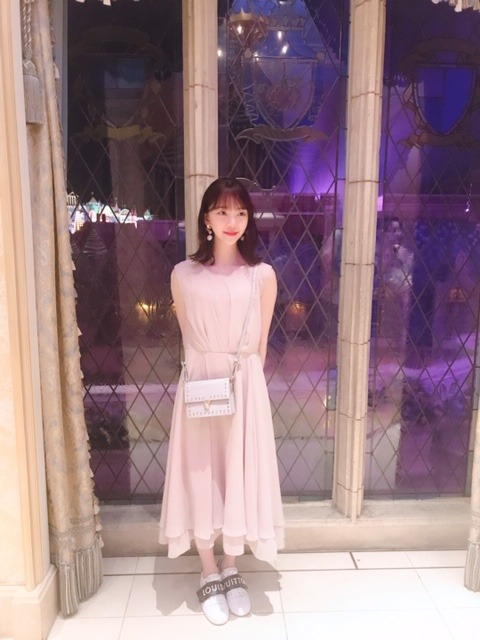

2019/0813Tue窓の景色は
路面電車の街
のMVが公開されました！
https://youtu.be/vUTmAHhAaEY
監督は山岸聖大さん！おひさしぶりでした！

ほっぺむぎゅ。
22歳で、学生役。ドキドキ
無邪気に走り回ってたりケラケラ笑っていて、自分でも自分を見て、おぉ楽しんでるなって。笑
あと車の上にも乗っちゃってます☺︎


映像がとても綺麗で、何回も何回も見てほしいな。
おすすめシーンは帰りの駅のホームでヒカリちゃんとパッと見つめ合うシーンです。
一瞬だけど、憧れや切なさや温もりやもどかしさ色んな気持ちが詰まっていてお気に入りシーンになりました
あとね、山岸監督がホットギミック を観てくださったみたいで合間にホットギミック のお話しができて凄く嬉しかったです✨嬉しいなぁ
感想聞かせてください☺︎


明日は京セラドーム2daysです！
久しぶりのライブがんばります〜
メンバーに会うのも皆さんに会うのも楽しみ
では☺︎
2019/08/13 18:30
コメント(340)
ライブ頑張ってね～。私は参加出来ないけど、気持ちは会場で声援送るね～。
お疲れ～＆はじめまして
1996年9月20日生まれの22歳と未央奈と同い年のShibaです 京都に住んでる～
路面電車の街MVみたよー めっちゃ神曲！！
明後日8/15と8/30全ツいく！
よろしくお願いします！
1996年9月20日生まれの22歳と未央奈と同い年のShibaです 京都に住んでる～
路面電車の街MVみたよー めっちゃ神曲！！
明後日8/15と8/30全ツいく！
よろしくお願いします！
こんばんは。ブログ更新ありがとうございます。
新曲のPV、続々と公開になってますね。私はいつも全タイプ買っているので、特典BDを楽しみにしています。音楽はダウンロードやストリーミングで聞く時代ですが、坂道グループもAKBグループもCDの売り上げでは健闘してますよね。あと最近の、デジタルでしか販売されていない音源を、アナログレコード化しても売れると思うんだけど、どうでしょうか？
ではまた。
新曲のPV、続々と公開になってますね。私はいつも全タイプ買っているので、特典BDを楽しみにしています。音楽はダウンロードやストリーミングで聞く時代ですが、坂道グループもAKBグループもCDの売り上げでは健闘してますよね。あと最近の、デジタルでしか販売されていない音源を、アナログレコード化しても売れると思うんだけど、どうでしょうか？
ではまた。
MV見ました！初めてコメントします。本当に可愛くて儚くて素敵でした。制服全然まだまだ着てほしいです！！！
京セラドームでのライブガンバです
なんか感動しました!
路面電車のMVでは
座る場所を間違えて
車の屋根に座ってしまい
おじさんを困らせた
堀未央奈さんブログ更新
ありがとう⁉︎(^ ^)
MV見たよ〜〜
山岸聖太さんのMV好きだわ〜〜
何か惹かれる感じがするんだよね。
あの教室ももちろん好きだし〜〜
またMV見るね〜
明日は久しぶりのライブ
台風吹き飛ばすくらい
楽しんでね⁉︎(^ ^)
座る場所を間違えて
車の屋根に座ってしまい
おじさんを困らせた
堀未央奈さんブログ更新
ありがとう⁉︎(^ ^)
MV見たよ〜〜
山岸聖太さんのMV好きだわ〜〜
何か惹かれる感じがするんだよね。
あの教室ももちろん好きだし〜〜
またMV見るね〜
明日は久しぶりのライブ
台風吹き飛ばすくらい
楽しんでね⁉︎(^ ^)
MV見たよー。
泣ける内容ですね、
居なくなってしまった友人、それで離ればなれになってしまった友人達、
五年後再開。たった７分間のMVなのに物語が伝わってきます。
しっかりとしたストーリー構成、感動しました。
未央奈ちゃんの制服姿にも感動ですよ。高校生でも充分行けるね(^ω^)
明日の大阪ライブ、行かれない人のために未央奈さん出演番組オンエアーなんてさすがです。
では
泣ける内容ですね、
居なくなってしまった友人、それで離ればなれになってしまった友人達、
五年後再開。たった７分間のMVなのに物語が伝わってきます。
しっかりとしたストーリー構成、感動しました。
未央奈ちゃんの制服姿にも感動ですよ。高校生でも充分行けるね(^ω^)
明日の大阪ライブ、行かれない人のために未央奈さん出演番組オンエアーなんてさすがです。
では
未央奈ちゃん、今日も一日お疲れさまです。
明日、明後日と楽しんでくださいね！！！
路面電車の街のMVを観た率直の感想、
しょっぱなから胸が苦しかったです。
飛鳥ちゃんの尋常でない姿をみて
苦しかったです。
そんな状況で、高瀬真奈さん、
どうしちゃったんだろうって、
頭が混乱しちゃって･･･。
なんか深いMVだなって思っています。
未央奈ちゃんがいうとおり
何度も観てみますね！
未央奈ちゃんもこれからも
未央奈ちゃんらしく頑張ってくださいね！！！
応援しています！！！
明日、明後日と楽しんでくださいね！！！
路面電車の街のMVを観た率直の感想、
しょっぱなから胸が苦しかったです。
飛鳥ちゃんの尋常でない姿をみて
苦しかったです。
そんな状況で、高瀬真奈さん、
どうしちゃったんだろうって、
頭が混乱しちゃって･･･。
なんか深いMVだなって思っています。
未央奈ちゃんがいうとおり
何度も観てみますね！
未央奈ちゃんもこれからも
未央奈ちゃんらしく頑張ってくださいね！！！
応援しています！！！
京セラ頑張ってね♡♡
大好き♡♡
大好き♡♡
未央奈こんばんは。
明日の大阪ライブ頑張ってね
仕事場で応援してるよ
モバメ見たけど
個別握手会11月9日で終わりなのかな？
その日券取ってあるからね
早く握手したい
またコメントするね
SONYでした
755返信ありがとーね
明日の大阪ライブ頑張ってね
仕事場で応援してるよ
モバメ見たけど
個別握手会11月9日で終わりなのかな？
その日券取ってあるからね
早く握手したい
またコメントするね
SONYでした
755返信ありがとーね
未央奈さん、こんばんは！
ほっぺむぎゅ
かわいい(^_^)
路面電車の街
MVみましたよ～
表情も豊かで感情表現の
上手さにグッときました
暑い日が続いてますので
身体に気をつけて
ライブ頑張って下さいな
ほっぺむぎゅ
かわいい(^_^)
路面電車の街
MVみましたよ～
表情も豊かで感情表現の
上手さにグッときました
暑い日が続いてますので
身体に気をつけて
ライブ頑張って下さいな
MV良かったです！
時の流れは速いが、それでも4人の思い出は色褪せない。心にぽっかり空いた穴を少なからず埋めてくれるのは大切な仲間と思い出。故郷。
ウルってきますね
ライブ頑張って！
時の流れは速いが、それでも4人の思い出は色褪せない。心にぽっかり空いた穴を少なからず埋めてくれるのは大切な仲間と思い出。故郷。
ウルってきますね
ライブ頑張って！
MV見ましたよ！
何か昔っぽくて青春だね。タイトルも路面電車ってなかなかないよな？
いい曲だね！
明日、大阪頑張って！
木曜は中京学院大中京だよ。それも東海大相模と
当たるんだよ。
玲香ちゃん対未央奈ちゃんの地元だね！
この試合はいい戦いになりそうな予感？
どっちが勝ってもおかしくない
何か昔っぽくて青春だね。タイトルも路面電車ってなかなかないよな？
いい曲だね！
明日、大阪頑張って！
木曜は中京学院大中京だよ。それも東海大相模と
当たるんだよ。
玲香ちゃん対未央奈ちゃんの地元だね！
この試合はいい戦いになりそうな予感？
どっちが勝ってもおかしくない
台風怖いけど頑張って☺︎
お疲れサマンサタバサ！
ひかりって誰？今度それを教えてください！
あと車の上乗れるとか、うらやましい竹内まりや
では、でわ、1話
ひかりって誰？今度それを教えてください！
あと車の上乗れるとか、うらやましい竹内まりや
では、でわ、1話
あのねこの曲聞いたあと友達に手紙書いたの。ちょっと寿命が短くなるような病気もっちゃった友人。いなくなっちゃやだなあって思って、僕と他の友人や友人の周りを繋ぎ止めるヒカリちゃんみたいな人だから手紙書いたの。届くといいなあ
明日ライブ行きます！初めて乃木坂のライブに行くので楽しみです！台風来るな〜
大好き。
4人の空気感が素敵なＭＶでしたね
世界観も意味深で、なんとなく映画のサニーを
思い出しました
世界観も意味深で、なんとなく映画のサニーを
思い出しました
ブログ更新、ありがとー！
MV何度も見ましたー！
学生時代のあの空気感、
離れていた月日も一気に巻き戻る再会、
あれ、泣いてんの？的な会話の雰囲気、
とても良かったー！
大阪day2、参戦しまーす！
金曜は仕事だから、
東京帰る新幹線、
動いてますよーに(＞人＜;)
MV何度も見ましたー！
学生時代のあの空気感、
離れていた月日も一気に巻き戻る再会、
あれ、泣いてんの？的な会話の雰囲気、
とても良かったー！
大阪day2、参戦しまーす！
金曜は仕事だから、
東京帰る新幹線、
動いてますよーに(＞人＜;)
みおな、ブログ更新ありがとう＼(^o^)／
路面電車の街のMV観たよ！
懐かしい感じであったり、哀愁を感じるMVだったよ(≧▽≦)
切ない気持ちにもなった！
みおなのお気に入りシーン見返したよ！
凄くいい表情してた～素敵なシーンだね(*≧∀≦*)
学生役まだまだいけると思うよ(^-^)v
また観たいなぁ(≧▽≦)
大阪公演2days楽しんでね(о´∀`о)
では(*￣∇￣)ノ
路面電車の街のMV観たよ！
懐かしい感じであったり、哀愁を感じるMVだったよ(≧▽≦)
切ない気持ちにもなった！
みおなのお気に入りシーン見返したよ！
凄くいい表情してた～素敵なシーンだね(*≧∀≦*)
学生役まだまだいけると思うよ(^-^)v
また観たいなぁ(≧▽≦)
大阪公演2days楽しんでね(о´∀`о)
では(*￣∇￣)ノ
未央奈～ こんにちは
連日のブログ更新ありがとうございます。
24thの新曲、続々と解禁になっていますが、「路面電車の街」、一度聞いただけで、すっかり気に入りました。
まずは「レコメン」での放送から、曲聞きながら、どんな路面電車？ といろいろイメージしていたのですが、MVを見て、そのイメージは崩れ去りました。
いきなりのショッキングな映像、そして「路面電車」というより、「ローカル列車」という感じで、思っていたのとは全然違っていました。岐阜県内には、いろいろなローカル電車があり、連想していたのですが‥‥。
それでも、曲の良さはしっかりと伝わっており、発売日がホント待ち遠しくなりました。
さぁね明日からは大阪での全国ツアー、台風に負けず、たくさんの元気、お届けください。
ご盛会・ご活躍、お祈りしております。
連日のブログ更新ありがとうございます。
24thの新曲、続々と解禁になっていますが、「路面電車の街」、一度聞いただけで、すっかり気に入りました。
まずは「レコメン」での放送から、曲聞きながら、どんな路面電車？ といろいろイメージしていたのですが、MVを見て、そのイメージは崩れ去りました。
いきなりのショッキングな映像、そして「路面電車」というより、「ローカル列車」という感じで、思っていたのとは全然違っていました。岐阜県内には、いろいろなローカル電車があり、連想していたのですが‥‥。
それでも、曲の良さはしっかりと伝わっており、発売日がホント待ち遠しくなりました。
さぁね明日からは大阪での全国ツアー、台風に負けず、たくさんの元気、お届けください。
ご盛会・ご活躍、お祈りしております。
お疲れ様です。
へぇ～。レクサスのISに乗っかってる。
へぇ～。レクサスのISに乗っかってる。
堀ちゃん、こんばんは。
『路面電車の街』のMV、見たよ。
僕は時々、1回聴いただけで一発で好きになる曲があるけど、乃木坂46の曲でいうと『Against』と『心のモノローグ』がこれに当たる。
そして、2回目聴いたあたりから「おおおっ！！」ってなる曲もあって、これが『日常』なんだけど、『路面電車の街』もこれに近いかもって思った
まず、メロディーがすごくいいなぁーって感じたよ！
あと、MVもすごく深みのありそうな雰囲気だったね
僕が小学生か中学生のときにすごく好きな曲があったと思うんだけど、これが何だったか思い出せない。
でも、そのときに聴いた曲に似ている気がする。
『路面電車の街』のMV、見たよ。
僕は時々、1回聴いただけで一発で好きになる曲があるけど、乃木坂46の曲でいうと『Against』と『心のモノローグ』がこれに当たる。
そして、2回目聴いたあたりから「おおおっ！！」ってなる曲もあって、これが『日常』なんだけど、『路面電車の街』もこれに近いかもって思った
まず、メロディーがすごくいいなぁーって感じたよ！
あと、MVもすごく深みのありそうな雰囲気だったね
僕が小学生か中学生のときにすごく好きな曲があったと思うんだけど、これが何だったか思い出せない。
でも、そのときに聴いた曲に似ている気がする。
ほっぺむぎゅ、かわいすぎる泣
かわいい➰
ブログありがとう〜！
路面電車の街いい曲だね！ウルっときちゃった！
大阪初日行きます！！！
楽しみ！めっちゃ盛り上がりたい！
路面電車の街いい曲だね！ウルっときちゃった！
大阪初日行きます！！！
楽しみ！めっちゃ盛り上がりたい！
MV見ましたよ、めっちゃ感動しました、有難うございます！私も、いつか故郷に帰りたいと思います、今は帰れないですけどwwww。
乃木坂さんは本当にこころの浄土ですね。
乃木坂さんは本当にこころの浄土ですね。
堀さん、こんばんは。
表題曲に続いて24枚目シングル収録曲から二曲のMVが公開に。少しずつMVのヴェールがめくられていくこの時期の雰囲気、好きです。
堀さん齋藤さん山下さんのユニット曲『路面電車の街』のMV観てきました。確かに堀さん車の屋根に乗ってました（ふふ）。ふつうそういう場面はおてんばな娘に見えそうなものを、傘を差していることでエレガントに。メアリー・ポピンズみたい。
日付が改まりまして、本日より大阪ライブが二日間。台風が心配ですけれど、両日ともつつがなく開催されますよう祈っています。
ではまたコメントします。おやすみなさい。
さらばだ、また会おう！（気球に乗って去りぬ〜）
表題曲に続いて24枚目シングル収録曲から二曲のMVが公開に。少しずつMVのヴェールがめくられていくこの時期の雰囲気、好きです。
堀さん齋藤さん山下さんのユニット曲『路面電車の街』のMV観てきました。確かに堀さん車の屋根に乗ってました（ふふ）。ふつうそういう場面はおてんばな娘に見えそうなものを、傘を差していることでエレガントに。メアリー・ポピンズみたい。
日付が改まりまして、本日より大阪ライブが二日間。台風が心配ですけれど、両日ともつつがなく開催されますよう祈っています。
ではまたコメントします。おやすみなさい。
さらばだ、また会おう！（気球に乗って去りぬ〜）
未央奈ちゃんブログ更新ありがとう！
ミュージック・ビデオめちゃくちゃよかったよ！
飛鳥ちゃん、未央奈ちゃん、美月ちゃんの3人の組み合わせは最高だよ！
大阪での真夏の全国ツアー頑張ってね！
ミュージック・ビデオめちゃくちゃよかったよ！
飛鳥ちゃん、未央奈ちゃん、美月ちゃんの3人の組み合わせは最高だよ！
大阪での真夏の全国ツアー頑張ってね！
さぁライブだぁ。神宮初日さ、アリーナゲットできたけど、大阪ドームは、二階席、グスン。声出してライブ盛り上げるぞお。ちなみに、未央奈のMVみたよ。未央奈が出てると、映像の意味も深くなるよね。
もう、三回みちゃいました。飛鳥、美月、と三人だったら、完全に乃木坂新時代だなぁっとみました。でもやっぱり、未央奈が一番です。可愛い、素敵、綺麗、引き込まれる透明感、最高だよ。
もう、三回みちゃいました。飛鳥、美月、と三人だったら、完全に乃木坂新時代だなぁっとみました。でもやっぱり、未央奈が一番です。可愛い、素敵、綺麗、引き込まれる透明感、最高だよ。
路面電車のMV観ました。
堀ちゃんが車の上に乗ってたときに、
あれは持ち主の人が帰ってきたのかな？
この展開はさすが堀氏だと思いました（笑）
なんで乗ってんだって笑いに変わる。
堀ちゃんというキャラの個性というか、
何食わぬ顔で車に乗ってるからこそ面白いというかね。
ライブやんか。
15日は観に行くんだけどね。
台風それろと祈ってます！
堀ちゃんが車の上に乗ってたときに、
あれは持ち主の人が帰ってきたのかな？
この展開はさすが堀氏だと思いました（笑）
なんで乗ってんだって笑いに変わる。
堀ちゃんというキャラの個性というか、
何食わぬ顔で車に乗ってるからこそ面白いというかね。
ライブやんか。
15日は観に行くんだけどね。
台風それろと祈ってます！
未央奈ちゃんブログありがとう！
更新多くて嬉しいです(*^▽^*)
全然学生役違和感ないですよ！まだまだイケます(^^)
路面電車の町のMV絶対見ます！今日の写真見ただけでもめちゃくちゃ雰囲気好きだな〜と思いました！
明日はついに京セラでライブですね！
福島からはるばる来ました！台風が来てるらしいけど、台風なんて吹き飛ばすくらいの最高のライブにしましょう！
更新多くて嬉しいです(*^▽^*)
全然学生役違和感ないですよ！まだまだイケます(^^)
路面電車の町のMV絶対見ます！今日の写真見ただけでもめちゃくちゃ雰囲気好きだな〜と思いました！
明日はついに京セラでライブですね！
福島からはるばる来ました！台風が来てるらしいけど、台風なんて吹き飛ばすくらいの最高のライブにしましょう！
やほ。ちなみに、台風がしんぱいだなぁ。明治神宮は、乃木恋で、祝花贈ることが出来たっぽいので、写真撮るよ。大阪も、神宮とも初日だけ参戦だよ。神宮はアリーナゲット出来たから大阪は予行演習的になるかなぁ。まぁ声出して盛り上げるけどねえ。しかし、未央奈は、本当に隙がなく、スーパーアイドルです。大好きです。この時代に居てくれて、本当にありがたいです。
みおなちゃんの服とかカバンかわいいな…気になる！
明日からの大阪ライブ参戦しますー！
楽しみだなあ♡
明日からの大阪ライブ参戦しますー！
楽しみだなあ♡
路面電車の街のＭＶ、観ましたよ。
「電車」に対するイメージは人それぞれなんだろうな
と思いました。
岐阜市もあったよね。名鉄の路面電車。
僕は学生時代に利用したから、
ＭＶに近いイメージがあるな。
十代の切なさがとても共感できました。
堀ちゃんはあまり乗らなかったのかな？
車の屋根の場面はシュールで
ＭＶの中ではインパクト、ありましたよ。
堀ちゃんの好きなフィンランドにもありますね。
ヘルシンキのトラムは便利なので
旅行の時、いつも活用します。
抑制された色遣いがとてもお洒落で好きです。
北欧デザインって感じ！
セリフはないけど、顔を合わせる場面など
目で演技できる堀ちゃんは
四人の中ではピカ一でしたよ。
さすがです。
いろんな役にチャレンジしてください。
応援しています。
「電車」に対するイメージは人それぞれなんだろうな
と思いました。
岐阜市もあったよね。名鉄の路面電車。
僕は学生時代に利用したから、
ＭＶに近いイメージがあるな。
十代の切なさがとても共感できました。
堀ちゃんはあまり乗らなかったのかな？
車の屋根の場面はシュールで
ＭＶの中ではインパクト、ありましたよ。
堀ちゃんの好きなフィンランドにもありますね。
ヘルシンキのトラムは便利なので
旅行の時、いつも活用します。
抑制された色遣いがとてもお洒落で好きです。
北欧デザインって感じ！
セリフはないけど、顔を合わせる場面など
目で演技できる堀ちゃんは
四人の中ではピカ一でしたよ。
さすがです。
いろんな役にチャレンジしてください。
応援しています。
全然話違いますけど、握手会では何を話せばいいですかね･･･、すっごい年下だし･･･。
なので、陰で応援してます！！
頑張ってくださいね！！
レコメンも毎回聞いてるんで、たまにメール送ってみます！
2度も執拗いかも知れませんが頑張ってくださいね！！
なので、陰で応援してます！！
頑張ってくださいね！！
レコメンも毎回聞いてるんで、たまにメール送ってみます！
2度も執拗いかも知れませんが頑張ってくださいね！！
ブログ更新ありがとう
路面電車の街、MV見たよ～
どこか懐かしさと
胸が痛くなるような
切なさを覚えました
台風が心配だけど
大阪でのライブ頑張ってね(*•ω•)b
路面電車の街、MV見たよ～
どこか懐かしさと
胸が痛くなるような
切なさを覚えました
台風が心配だけど
大阪でのライブ頑張ってね(*•ω•)b
堀さん、こんばんは。MV見ました。
齋藤さんが泣けないでいたことで始まった友情が堀さんの「なんで泣いてるの？」でまた復活するってことに思えました。
見つめ合う場面はとても綺麗ですね。友情をはみ出す部分の存在を教える重要な場面だと思います。
僕としては３人揃ってから走馬燈みたいに思い出が爆発する場面が良かったです。
それと歌詞そのままじゃなかったのも、歌の世界が広がっていってるみたいで良かったです。
あと堀さんの、周りを翻弄するキャラクターも良かったです。車の屋根なんて猫とジャッキーチェン以外めったに乗らないですよね。もし仮にオープンカーだったら勝手に乗り込んでたかもしれませんね。怖いです。
では、ライブ頑張ってくださいね。熱いライブにしちゃってください。
齋藤さんが泣けないでいたことで始まった友情が堀さんの「なんで泣いてるの？」でまた復活するってことに思えました。
見つめ合う場面はとても綺麗ですね。友情をはみ出す部分の存在を教える重要な場面だと思います。
僕としては３人揃ってから走馬燈みたいに思い出が爆発する場面が良かったです。
それと歌詞そのままじゃなかったのも、歌の世界が広がっていってるみたいで良かったです。
あと堀さんの、周りを翻弄するキャラクターも良かったです。車の屋根なんて猫とジャッキーチェン以外めったに乗らないですよね。もし仮にオープンカーだったら勝手に乗り込んでたかもしれませんね。怖いです。
では、ライブ頑張ってくださいね。熱いライブにしちゃってください。
ほりっぴ～、ナンチです♪
ブログ更新ありがとう～
路面電車
MV見たら感想必ずコメするね
明日からの大阪2days
明日は大丈夫そうだけど明後日がちょっと心配
みんなが楽しく時間と空間を過ごせることを祈ってるね
もちろんほりっぴ～も楽しんでね
ブログ更新ありがとう～
路面電車
MV見たら感想必ずコメするね
明日からの大阪2days
明日は大丈夫そうだけど明後日がちょっと心配
みんなが楽しく時間と空間を過ごせることを祈ってるね
もちろんほりっぴ～も楽しんでね
未央奈～☆☆
路面電車の街
MV観たよ～
楽しみにしてたんだ。
学生の未央奈がヒカルちゃんと楽しそうにしているシーンや
見つめ合うシーンなんかは、
正に今のこの瞬間を学生として生きているって感じるほど
この作品の中に溶け込んでいたから、
学生服の未央奈は学生にしか見えなかったよ。
ピンクの傘を持った未央奈が
真っ赤な車の上に乗ってるシーンは
最初はインパクトがありすぎてビックリしたけど、
後半に行くにつれて
なぜか自然な流れで受け入れられるようになったのが
不思議だったなー
ヒカリちゃんとのキラキラした楽しい思い出が、
未央奈の中ではもの凄く鮮烈に残っていて
もしかしたら、それを形に表したものが、
真っ赤な車やピンクの傘だった？
だから、後半は違和感なく自然な繋がりで観られたのかなー
MVを観れば観るほど、新たな発見があったり
感じるものがあったりするから、
もう一回観ようってなって、
既に何度も観ちゃってるよ。笑
路面電車の街
MV観たよ～
楽しみにしてたんだ。
学生の未央奈がヒカルちゃんと楽しそうにしているシーンや
見つめ合うシーンなんかは、
正に今のこの瞬間を学生として生きているって感じるほど
この作品の中に溶け込んでいたから、
学生服の未央奈は学生にしか見えなかったよ。
ピンクの傘を持った未央奈が
真っ赤な車の上に乗ってるシーンは
最初はインパクトがありすぎてビックリしたけど、
後半に行くにつれて
なぜか自然な流れで受け入れられるようになったのが
不思議だったなー
ヒカリちゃんとのキラキラした楽しい思い出が、
未央奈の中ではもの凄く鮮烈に残っていて
もしかしたら、それを形に表したものが、
真っ赤な車やピンクの傘だった？
だから、後半は違和感なく自然な繋がりで観られたのかなー
MVを観れば観るほど、新たな発見があったり
感じるものがあったりするから、
もう一回観ようってなって、
既に何度も観ちゃってるよ。笑
MV観たよっ！
胸がキュンっと締め付けられる感じて良かったよ！
2days頑張って！台風なんか吹きどばしちゃえ！
胸がキュンっと締め付けられる感じて良かったよ！
2days頑張って！台風なんか吹きどばしちゃえ！
未央奈ちゃん。ブログ更新ありがとう！路面電車全国あちらこちら、走っていますが、私が思いつくのは、京都の嵐電・そして、鎌倉の江ノ電です。どちらも、車窓からの眺め最高です。真夏の全国ツアー大阪初日参戦します。未央奈に会えるのを楽しみにしています。
可愛い！MVまじ最高です！頑張ってください！
未央奈ちゃんブログ更新有り難うございます。車の上に座った写真て不思議な感じがします。トトロみたいです。あと頬っぺむぎゅもかわいいです。本当に女の子を楽しんでいるみたいです。かわいいです。
未央奈ちゃん更新ありがとー！
「路面電車の街」MV見たよー！！
曲調に合って穏やかな、そして綺麗なMVでした。
青春を振り返って少し切なくも感じたよ(>_<)
学生時代に戻ってみたいなー。
いよいよ大阪でのツアーだね！
行くことはできないけど
心は大阪！
しっかり応援するね！
台風なんて吹き飛ばそう！
「路面電車の街」MV見たよー！！
曲調に合って穏やかな、そして綺麗なMVでした。
青春を振り返って少し切なくも感じたよ(>_<)
学生時代に戻ってみたいなー。
いよいよ大阪でのツアーだね！
行くことはできないけど
心は大阪！
しっかり応援するね！
台風なんて吹き飛ばそう！
台風を吹き飛ばせ❗(￣ー￣)みおにゃ♪ヽ(´▽｀)/京セラ！頑張れ↑↑↑↑
みーおな！！
MV見た！！めっっっっちゃ可愛かった♡
何回も何回もみるね！！
ライブ頑張ってね⸜❤︎⸝
ライブの未央奈に会いたかった
MV見た！！めっっっっちゃ可愛かった♡
何回も何回もみるね！！
ライブ頑張ってね⸜❤︎⸝
ライブの未央奈に会いたかった


みんなの雰囲気が好き〜
ずっと歌っちゃってる！